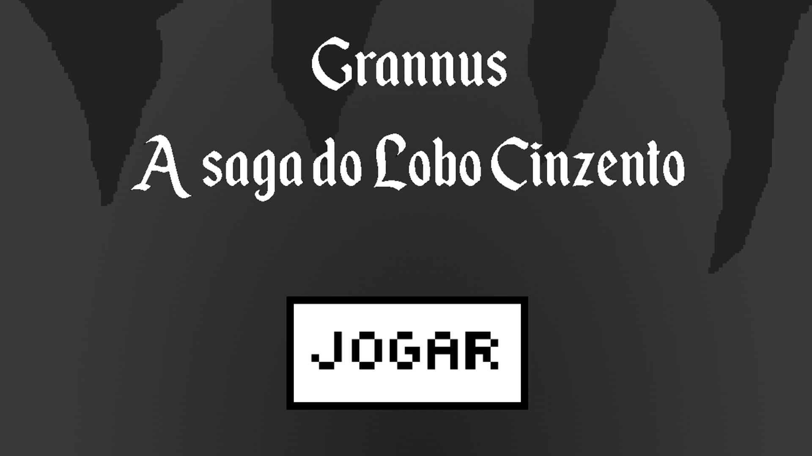
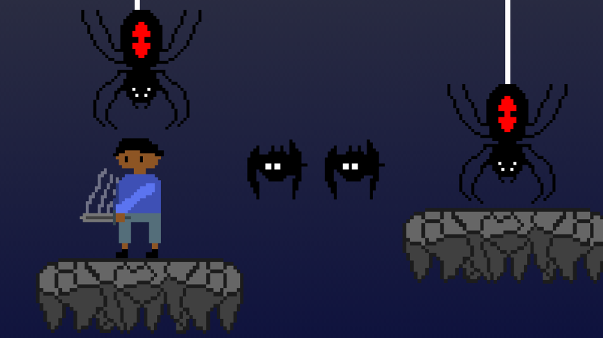
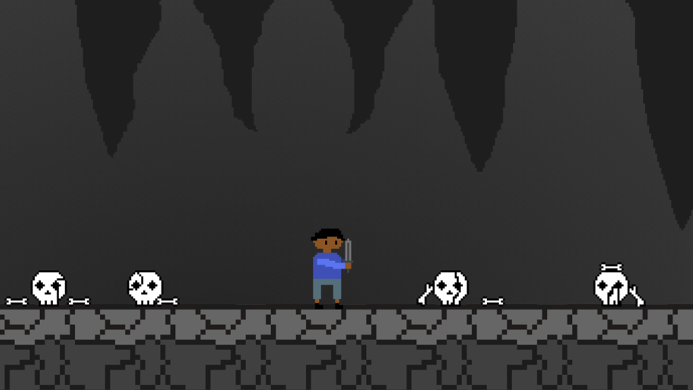

Projeto Integrador
Este webgame é o meu projeto integrador. Como todo trabalho que desenvolvemos no curso ele tem início, meio e fim. Passamos por várias etapas e aprendemos vários conhecimentos, não só nessa qualificação, mas todas as outras fazem parte do processo para chegarmos até aqui.
Grannus - A Saga do Lobo Cinzento



Para acessar o jogo e poder jogar bastante clique no link abaixo:
Acesse o jogo com este link: Grannus
História - Estigma
A história se passa no ano de 1400, quando Grannus tinha apenas 6 anos. Ele vivia feliz com sua espada, explorando a floresta ao redor do reino de Aurora em busca de aventura. Um dia, enquanto explorava, caiu em uma caverna e se viu obrigado a seguir em frente para encontrar uma saída. Enfrentando diversos perigos, como aranhas, morcegos e até mesmo um lobo, Grannus mostrou uma coragem impressionante para uma criança tão nova. Apesar de estar em situações perigosas, ele conseguiu afugentar o lobo que derruba uma estrela considerada lenda da região que leva o Grannus para fora com uma condição.